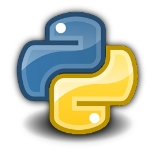
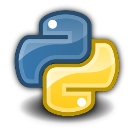

Серед основних переваг Python можна назвати такі:
1.чистий синтаксис (для виділення блоків слід використовувати відступи);
2.переносність програм (що властиве більшості інтерпретованих мов);
3.стандартний дистрибутив має велику кількість корисних модулів (включно з модулем для розробки графічного інтерфейсу);
4.можливість використання Python в діалоговому режимі (дуже корисне для експериментування та розв'язання простих задач);
5.стандартний дистрибутив має просте, але разом із тим досить потужне середовище розробки, яке зветься IDLE і яке написане мовою Python;
6.зручний для розв'язання математичних проблем (має засоби роботи з комплексними числами, може оперувати з цілими числами довільної величини, у діалоговому режимі може використовуватися як потужний калькулятор);
7.відкритий код (можливість редагувати його іншими користувачами).
2.переносність програм (що властиве більшості інтерпретованих мов);
3.стандартний дистрибутив має велику кількість корисних модулів (включно з модулем для розробки графічного інтерфейсу);
4.можливість використання Python в діалоговому режимі (дуже корисне для експериментування та розв'язання простих задач);
5.стандартний дистрибутив має просте, але разом із тим досить потужне середовище розробки, яке зветься IDLE і яке написане мовою Python;
6.зручний для розв'язання математичних проблем (має засоби роботи з комплексними числами, може оперувати з цілими числами довільної величини, у діалоговому режимі може використовуватися як потужний калькулятор);
7.відкритий код (можливість редагувати його іншими користувачами).
Python має ефективні структури даних високого рівня та простий, але ефективний підхід до об'єктно-орієнтованого програмування. Елегантний синтаксис Python, динамічна обробка типів, а також те, що це інтерпретована мова, роблять її ідеальною для написання скриптів та швидкої розробки прикладних програм у багатьох галузях на більшості платформ.
Інтерпретатор мови Python і багата Стандартна бібліотека (як вихідні тексти, так і бінарні дистрибутиви для всіх основних операційних систем) можуть бути отримані з сайту Python www.python.org, і можуть вільно розповсюджуватися. Цей самий сайт має дистрибутиви та посилання на численні модулі, програми, утиліти та додаткову документацію.
Інтерпретатор мови Python може бути розширений функціями та типами даних, розробленими на C чи C＋＋ (або на іншій мові, яку можна викликати із C). Python також зручна як мова розширення для прикладних програм, що потребують подальшого налагодження.
Інтерпретатор мови Python і багата Стандартна бібліотека (як вихідні тексти, так і бінарні дистрибутиви для всіх основних операційних систем) можуть бути отримані з сайту Python www.python.org, і можуть вільно розповсюджуватися. Цей самий сайт має дистрибутиви та посилання на численні модулі, програми, утиліти та додаткову документацію.
Інтерпретатор мови Python може бути розширений функціями та типами даних, розробленими на C чи C＋＋ (або на іншій мові, яку можна викликати із C). Python також зручна як мова розширення для прикладних програм, що потребують подальшого налагодження.